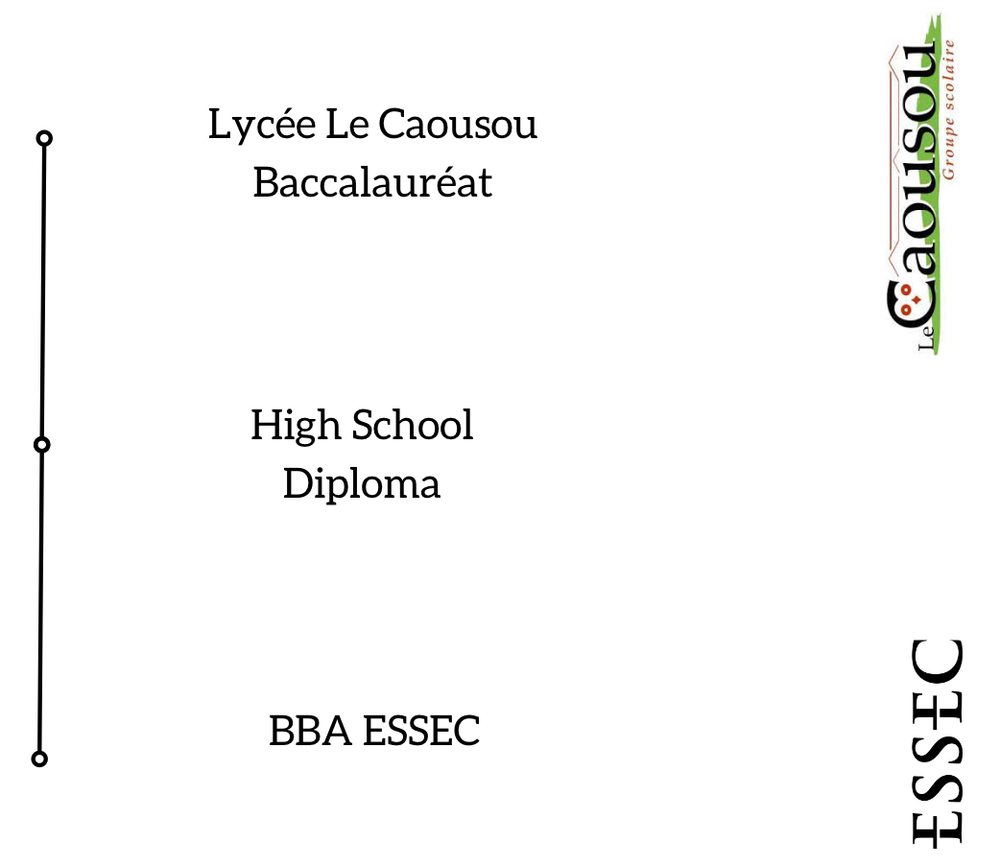

Je m'appelle Colin, je suis actuellement étudiant au Bachelor of Business and Administration (BBA), de l'ESSEC, pour le moment à Cergy, mais
je garde Toulouse dans mon coeur. Aujourd'hui tiraillé entre la gestion de patrimoine et l'industrie, je m'intéresse fortement à l'investissement et la relance
industrielle de la France. 🇫🇷 #France2030 J'attends avec grande impatience mes années d'échanges, et suis un grand curieux des cultures étrangères ! 🌍
Mention spéciale à 2 domaines, les crypto-actifs et la révolution qu'ils apportent, ainsi que l'aviation, chef d'oeuvre qui me fait rêver et voir les
choses en grand, les aéroports sont ma deuxième maison. "Volons, et donnons aux oiseaux une raison de regarder vers le ciel." ✈️ Vincent van Gogh
J'adore la photographie et le cinéma, l'un que je pratique, l'autre que je regarde. 📸 Lumix
Les entreprises qui me font rêver sont des réussites
exceptionnelles comme : Airbus, Dassault, LVMH, EDF, Revolut, TradeRepublic, Finary, Tesla, ou encore MistralAI.
🎓 ESSEC 📍 Cergy 🇫🇷 France
Scolarité
Je suis rentré au collège Le Caousou en 2016, institution dans laquelle je suis resté pour le Lycée jusqu'en 2023, quand j'ai obtenu mon BAC,
spécialités : Sciences Économiques et Géopolitque. Durant le lycée, j'ai aussi intégré un cursus scolaire international Américain en parallèle de mon Lycée. J'ai eu la chance d'y étudier: le managment, l'économie
ou encore l'histoire américaine avec des professeurs locaux, ainsi je suis gradué du : High School Diploma.
De plus, je preparais aussi en parallèle le concours Sésame, avec notement deux stages chez Ipésup.
Finalement, j'ai intégré cette année le Bachelor in Business Administration de l'ESSEC suite à mes résultats au Concours Sésame.

Expérience
En Décembre 2019, je découvre le monde du travail via mon stage de 3eme dans la société de production vidéo Digital Gate.
J'ai peu approfondir ce domaine qui me passionne en Juin 2021, en passant un second stage chez la société de production vidéo Valeurs D'image.
C'est finalement en Juillet 2022 que je décroche mon premier CDD chez la société de communication WeCom4U